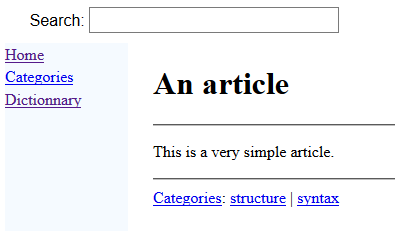
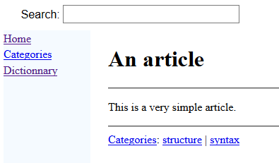

Syntax end elements
This article explains the XML tags which can be used at the beginning of articles. The following elements can be used at the end of articles:

- "see": allows to add a "See Also" chapter at the end of the article with wiki links to other articles
- "cat": define that an article belongs to one category
see
The "see" element allows to add a "See Also" chapter at the end of the article with wiki links to other articles. These elements work as the ref element.Example
<article desc="an article"> This is a very simple article. <see id="syntax" /> <see id="tutorial" desc="the tutorial" /> </article>
cat
The "cat" element allows to define that an article belongs to one category. Note that an article can belong to more than one category.Example
<article desc="an article"> This is a very simple article. <cat id="syntax" /> <cat id="structure" /> </article>We will have the following output for the article:

See Also
- Syntax overview: This article presents an overview of the tags supported in the XML syntax
- Syntax: This article explains the XML tags which can be used to specify the articles syntax
- Articles: Article files are XML files which define the articles in the wiki
×

Categories: syntax